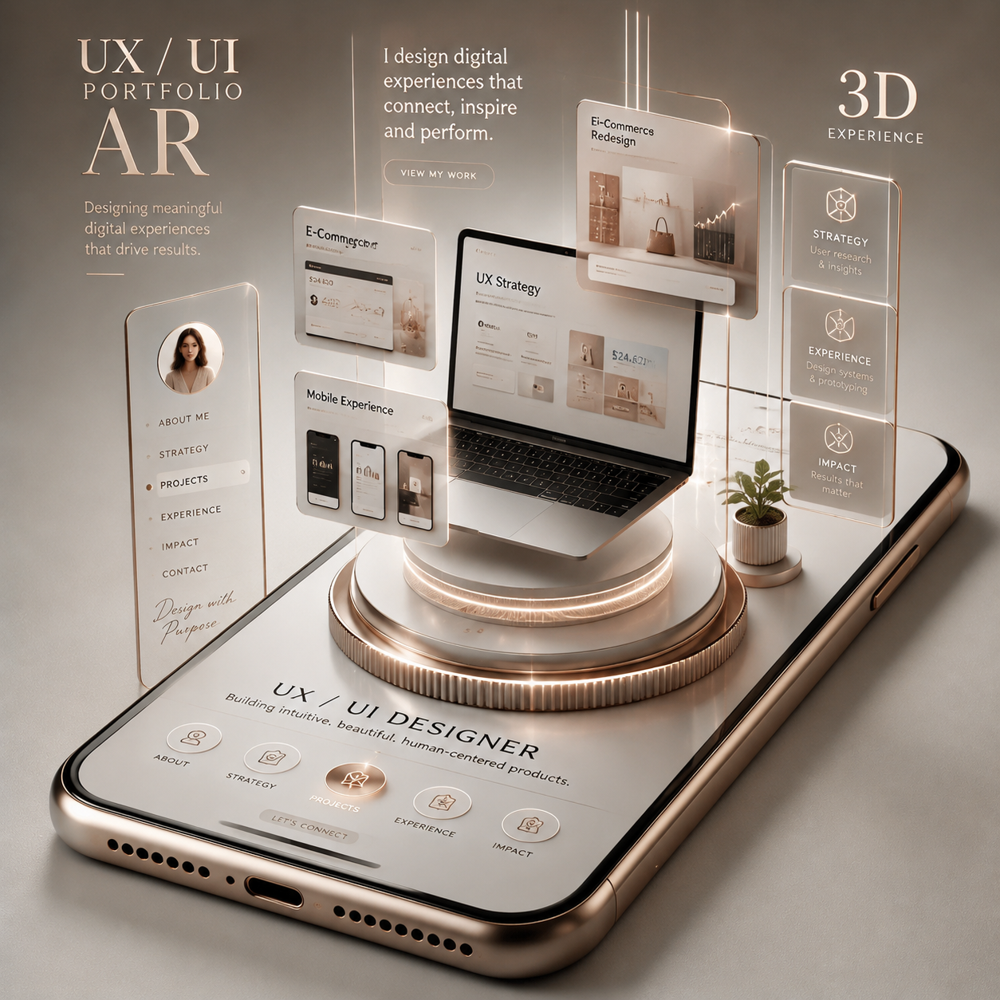

Design d’expériences utiles & significatives
Ce qui bloque
ne se voit pas.Ça se révèle.
J’aide les organisations à clarifier ce qui compte et à concevoir des expériences numériques plus simples, plus humaines et plus efficaces.

Stratégie UXRecherche · cadrage · impact
ExpérienceParcours clairs et désirables
InteractionMicro-animations utiles
Projets récents
Des cas concrets, pas du décor.
Ma démarche
Clarté. Empathie. Impact.
Une méthode simple : écouter, structurer, concevoir, mesurer. Pas de poudre aux yeux. Du design qui sert vraiment.
Découvrir mon approche →01
Comprendre
Recherche, contexte, irritants.
02
Clarifier
Priorités, enjeux, parcours.
03
Concevoir
Wireframes, prototype, UI.
04
Activer
Tests, mesure, amélioration.
Journal